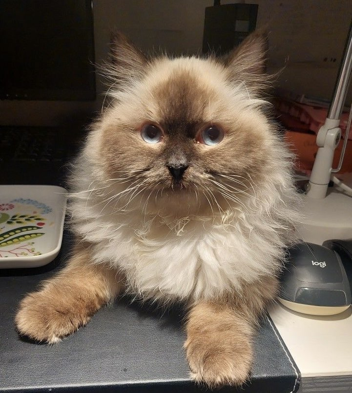

Johan
I have a background in motion design, VFX and 3D graphics but i have a bit of coding and git experience, I also have big interest in lower level computer things as well as cybersecurity and have done red teaming tests. i have a big interest in operative systems and networks as i grew up tinkering with hardware that later on grew into more interest in OS's, bios settings etc, due to my love for FPS games.